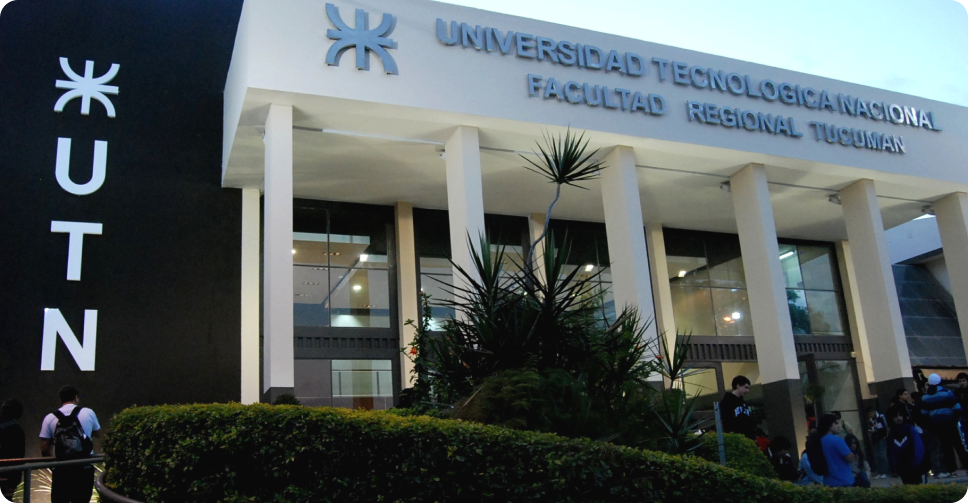

Universidad Tecnológica Nacional (UTN)
Creada en 1959, su Facultad Regional Haedo es una de las sedes más representativas de la región oeste, con fuerte enfoque en la formación técnica y tecnológica.
Carreras:
La UTN es reconocida en toda Argentina por su enfoque en la formación tecnológica e industrial. ofrece carreras pensadas para satisfacer la demanda tecnológica del país y el mundo:
Carreras de Ingeniería:
- Ingeniería Electrónica
- Ingeniería Industrial
- Ingeniería Mecánica
- Ingeniería Ferroviaria
- Ingeniería Aeroespacial
- Bioingeniería
Tecnicaturas Universitarias:
- Programación
- Logística
- Procesos Industriales
- Mantenimiento Industrial
- Operación y Mantenimiento de Redes Eléctricas
Modalidades Disponibles y Datos de Contacto
Modalidades de Estudio:
- Presencial, con posgrados y cursos híbridos o virtuales
Contacto:
- Página web: www.frh.utn.edu.ar
- Dirección: Av. Mitre 750, Haedo, Buenos Aires
- Teléfono: (011) 4659-0227